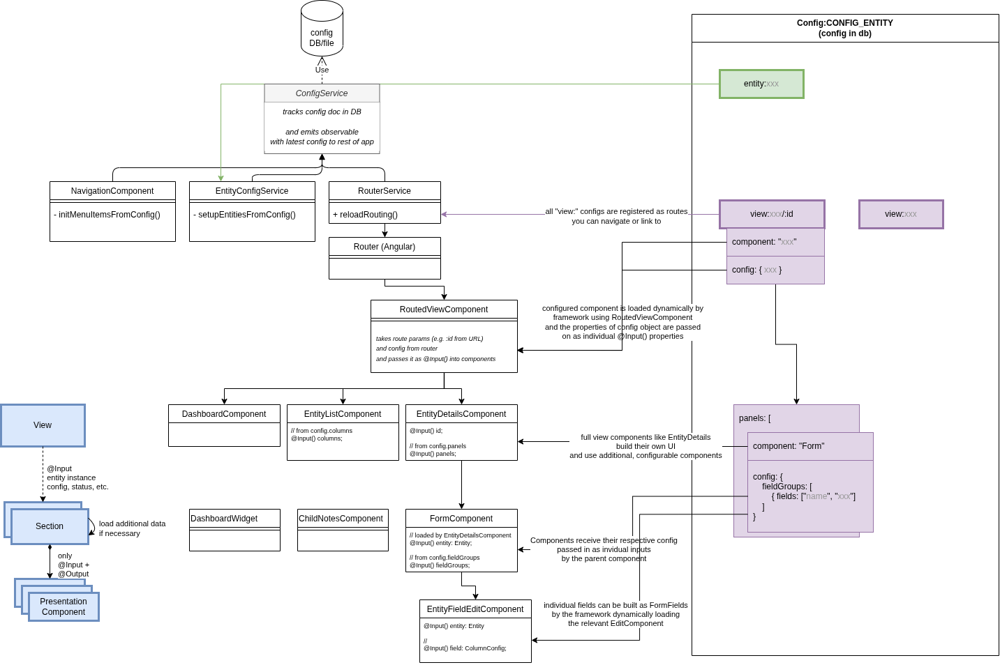

The config is a json object containing information about how the user interface for a specific project is displayed. The config is stored in the database and can be updated for a user without changing the code base. The default config is part of the repository in the config-fix.json file.
Config data is loaded by the ConfigService and then distributed to the relevant modules.
This document aims to explain how cofiguration defines the rest of the application and all options that can be changed through the config.

The ConfigService is an Angular service that you can inject anywhere in the code if you need to access configuration values. It loads the configuration from the database (or the default file if no entry is available) first thing when starting the application.
Some core services use the ConfigService to dynamically set up parts of the application on startup. For example the NavigationItemsService creates the menu items as configured and the RouterService sets up Angular routing defining what components users see. The config service provides a behavior subject which will notify all subscribers when a new configuration was uploaded. This can be used for core tasks like setting up the routes or creating the navigation bar.
Top-level "view" components (i.e. components that are used to define a whole page, not just some building block for a part or section)
receive their config data automatically assigned as @Input() properties mapped from config object property name to an identical component class property.
This is handled by the RoutedViewComponent internally.
(If needed for special cases, you can also access it through the standard Angular router and can access it by injecting ActivatedRoute.)
Config is currently stored in the normal app database with the fixed _id "_id": "Config:CONFIG_ENTITY".
This document in the database has to contain a single property data that holds the config object whose parts are described here.
Example:
Example :{
"_id": "Config:CONFIG_ENTITY",
"data": {
"navigationMenu": {
"items": [
...
]
}
...
}
}Uploading and downloading the configuration can be done by admins inside the admin view.
The config file is a json object containing information about what and how things are displayed in the application. On the top level of the config file, there are four different kinds of entries:
navigationMenu)view:<path>)enum:<category-id>, including available Note categories, etc.)entity:<entity-id>)also see User Roles & Permissions
The top level entry navigationMenu builds the visible and clickable items for the navigation menu on the left hand side of the app. Right now, the navigationMenu has the only subentry items. items contains an array of objects, each object representing one item within the navigation menu. The order of the entries reflects how the navigation menu items are shown in the app.
Each navigation menu item object has to have the three properties name, icon and link. name hold the inscription of the item in the navigation menu in the app, icon indicates the little icon picture that is shown before the textual inscription of the item in the navigation menu and link contains the URL or view that the user is directed to when clicking on the navigation menu item. For every link given, there necessarily has to be a corresponding view-entry on the top level of the config file.
Example:
Example : "navigationMenu": {
"items": [
{
"name": "Dashboard",
"icon": "home",
"link": "/"
},
{
"name": "Children",
"icon": "child",
"link": "/child"
},
...
{
"name": "Help",
"icon": "question-circle",
"link": "/help"
}
]
},The largest part of the config file are the views. Each view entry starts with view:.
The part that comes after the colon is what comes after the top level / in the URL of the app.
There has to be one view entry with nothing after the colon, thus directing to the root path that is used as a default one when the user opens the app.
Paths can have multiple parts, e.g. view:admin/conflicts.
If we append :id, then this is used as a parameter directly from the app, e.g. view:child/:id is the path for the child details view where the app provides the child entity id to be viewed to the component.
The only mandatory field for each view is "component": telling the app which component to use for the respective view.
The component part has to refer to an existing angular component within the app. Components that are valid and may
be used for the view have the @DynamicComponent decorator present
The two optional fields of each view are "config": and "permittedUserRoles":.
"permittedUserRoles" expects an array of user role strings.
If one or more roles are specified, only users with these roles are able to see this menu item and visit this page in the app.
What comes within the "config": object depends on the component being used.
The Dashboard-Component for example takes as "widgets:" an array of subcomponents, where every entry has to have a "component:" and may have an own "config:" object.
(This "config" is passed to the component, which receives and handles it by implementing the OnInitDynamicComponent interface)
Example:
Example :"view:": {
"component": "Dashboard",
"config": {
"widgets": [
{
"component": "ChildrenCountDashboard"
},
{
"component": "RecentNotesDashboard"
},
{
"component": "NoRecentNotesDashboard",
"config": {
"sinceDays": 28,
"fromBeginningOfWeek": false
}
},
...List components showing data in a table (such as ChildrenList oder SchoolsList) usually have the four config objects "title", "columns", "columnGroup" (optional) and "filters" (optional).
(These are implemented by the EntityListComponent.)
The "title" is the text shown in the heading of the component.
"columns" contains an array of the columns to be displayed.
The configuration for the columns happens with the FormFieldConfiguration interface.
If all the information is available on the schema or through the datatype of a property, it is sufficient to put a string with the name of the property into the columns array.
Example:
Example :"view:child": {
"component": "ChildrenList",
"config": {
"title": "Children List",
"columns": [
"projectNumber",
{
"viewComponent": "ChildBlock",
"label": "Name",
"id": "name"
},
...The "columnGroup" object holds the three properties "default", "mobile" and "groups".
"default" and "mobile" hold the names of the group of columns being displayed by default or on a mobile device.
If the "columnGroup" property is not defined, all columns will be displayed.
If "default" or "mobile" is not defined, the first entry of "groups" will be used.
"groups" consists of an array of groups of columns, where every entry has a "name" and an array of column ids within "columns".
Properties that are listed in any of the groups arrays and don't require further configurations, can be omitted from the columns array, the EntityListComponent will automatically add them.
Example:
Example :"columnGroup": {
"default": "School Info",
"mobile": "Mobile",
"groups": [
{
"name": "Basic Info",
"columns": [
"projectNumber",
"name",
...
"status"
]
},
{
"name": "School Info",
"columns": [
"projectNumber",
"name",
...
]
},
The object "filters" within the config of a list component can be used to create filter options for the list data.
The type of filter will be automatically determined by the datatype of that property.
The filters allow to filter the table by the possible values of a property.
This will create a filter for boolean values with three buttons (all, true, false).
The names of these buttons can be specified using the "true", "false" and "all" option.
The prebuilt option is used to enable or disable filters that contain more logic and are implemented inside the component which is displayed.
This option requires the fields "type" and "id", where "id" matched the id of a prebuilt filter inside a component.
Example:
Example :"filters": [
{
"id": "language"
},
{
"id": "privateSchool",
"default": "all",
"true": "Private School",
"false": "Government School",
"all": "All"
},
{
"id": "date",
"type": "prebuilt"
},
]Detail components can show data of a single entity presented in multiple sections and forms. (These are implemented by the EntityDetailsModule, in particular the EntityDetailsComponent.)
You can find details on the config format and its sub-sections from API reference section: EntityDetailsConfig
The detail component requires three attributes: "icon", "entity" and "panels".
"icon" indicates a little icon that will be rendered on the top of the page.
"entity" expects the name of an entity for which the details page should be created.
This has to match exactly the name of the entity defined by the @DatabaseEntity() annotation.
The entity will then be loaded using the entity name and the id which is read from the URL.
The "panels" field expects an array of panel definitions.
Each panel has a "title" and an array of "components".
The component configuration requires another "title", the "component" that should be rendered (the component has to be defined here OnInitDynamicComponent) and a configuration ("config") which is passed to this component.
"config": {
"icon": "child",
"entity": "Child",
"panels": [
{
"title": "Basic Information",
"components": [
{
"title": "",
"component": "Form",
"config": {
}
}
]
},
{
"title": "Education",
"components": [
{
"title": "School History",
"component": "PreviousSchools"
},
{
"title": "Literacy Test Results",
"component": "RelatedEntities",
"config": {
}
}
]
}
]
}The form component is a flexible component that can be used inside the details component.
It allows to dynamically create a form through configuration.
The configuration for this component expects a single field, the "fieldGroups".
The fieldGroups should be an array of logically related fields and optionally a header displayed above the group of fields.
Each field group is rendered next to each other (as columns).
You can also define only a single field in each fieldGroups entry, to display them next to each other instead of one field taking up full width.
The definitions for the fields is defined by the FormFieldConfiguration
However, the schema definitions of the entity should be sufficient so that only the names of the properties which should be editable in the form have to be provided.
This means instead of placing an object in the fields array, simple strings do the same job.
"config": {
"fieldGroups": [
{"fields": ["photo"] },
{"fields": ["name", "projectNumber"] }
{
"fields": ["dateOfBirth"],
"header": "Demographics"
}
]
}This component shows a list of ChildSchoolRelations of a child in table.
It can be configured which attributes of the ChildSchoolRelation are shown in the table and how the columns are named.
Possible configurations are single and columns which are both optional.
single is a boolean and if is set to true the component will show which (if any) school the child is currently attending.
This should only be set to true, when the use-case only allows one active school per child.
columns is an object and determines which columns of the ChildSchoolRelation are shown.
The configuration is according to the EntitySubrecordComponent;
Example:
Example : "config": {
"single": true,
"columns": [
"schoolId",
"schoolClass",
"start",
"end",
"result",
],
}The entity object within the config file can be used to extend and configure existing entities.
The name of the entity to which this config refers comes after the colon in this case "child".
The attribute field allows to add attributes to an entity: Configure this as a key-value object with the property name as key and the schema as value, which refers to the entity schemas.
Example:
Example :"entity:Child": {
"attributes": {
"address": {"dataType": "string", "label": "Address"
},
"phone": {
"dataType": "string", "label": "Phone number"
},
...
"health_lastDeworming": {"dataType": "Date", "label": "Last deworming"}
}
}
It is possible to overwrite, how an entity is converted to a string using the optional toStringAttributes key.
This expects an array of strings referring to properties of that child which should be printed out.
The order of these strings is also the order in which the property values are printed.
E.g. while some projects use a name property on a child, others might use firstname and lastname.
In this case they probably want to show both the first and the last name in the app.
To achieve this, the configuration of the Child entity can be extended like this:
"entity:Child": {
"toStringAttributes": ["firstname", "lastname"],
"attributes": {
"firstname": {
...
},
"lastname": {
...
},
...
]
}
For different organisations, entities might refer to different real life objects.
In other words, it is not always suitable to call the entities Child or School and the icon might also be
misleading.
Therefore, the names and icons of entities can be changed through the config.
This allows to change a text like Participants with unhealthy BMI to Patients with unhealthy BMI.
To achieve this a label and labelPlural can be defined in the entity config.
Additionally, the icon property allows to exchange the icon to another one from
the FontAwesome Icon Library.
This also has to be adjusted when configuring in a different language.
E.g.
Example :"entity:Child": {
"label": "Patient",
"labelPlural": "Patients",
"icon": "bed",
...
}Option lists or ConfigurableEnumValues can provide a pre-set list of options for a field
to allow users to easily select an option from a dropdown and ensure that users are not entering random, invalid values.
Config entries for this purpose have a prefix enum: followed by an id you can freely define (e.g. enum:project-status).
The value is an array of objects defining the options. Mandatory fields for each option are "id" and "label".
"id" should be written in uppercase letters without spaces (user underscore _ instead).
The "id" should always stay the same as it is written to the database and identifies the value even if you rename the label shown to users.
"label" holds the human-readable text for the dropdown entry or wherever the value is shown to the user.
This text may be changed without any negative effect to data consistency and the change will instantly be visible in all saved entries of this type.
Example:
Example :"enum:project-status": [
{
"id": "ACTIVE",
"label": "active"
},
{
"id": "COMPLETED",
"label": "completed the programme"
},
{
"id": "DROPPED",
"label": "dropped out of the programme"
}
]In order to use such an "enum" in entity fields, you need to set the schema datatype and the form type in the according config objects:
In the entity, set the dataType to "configurable-enum" and the "additional" to the id of the enum config:
Example :"entity:Child": {
"attritubtes": {"status": {"dataType": "configurable-enum", "additional": "project-status"
}
}
...In the List View columns config, use the "DisplayConfigurableEnum" component for the field:
Example :"columns": [
{
"component": "DisplayConfigurableEnum",
"title": "Status",
"id": "status"
},
...
]A property can also be defined in a way that multiple values can be selected.
To allow multiple selection, additionally isArray should be true.
The following example creates a property materials where multiple values from the materials configurable enum can be selected.
{
"name": "materials",
"schema": {
"dataType": "configurable-enum",
"isArray": true,
"additional": "materials",
"label": "Materials"
}
}There are a few specially built-in types of enums.
The interaction types available for Notes are configured as the enum:interaction-type.
In addition to id and label for the interaction types you can optionally also configure "color"and "isMeeting".
"color"can contain a background color for the entry in the form of the hexadecimal code, e.g. #E1F5FE.
"isMeeting" is of the type boolean and tells whether the interaction type refers to a meeting or not.
Example:
Example :"enum:interaction-type": [
{
"id": "",
"label": ""
},
{
"id": "HOME_VISIT",
"label": "Home Visit"
},
{
"id": "ANNUAL_SURVEY",
"label": "Annual Survey",
"color": "#FFFDE7"
},
{
"id": "RATION_DISTRIBUTION",
"label": "Ration Distribution",
"color": "#E1F5FE",
"isMeeting": true
}
}Another specially built-in type of enums is the attendance status options that can be tracked.
These are configured as the enum:attendance-type.
Apart from to id and label attendance status types have to also define a few additional properties:
shortName: a one letter representation to display to the userlabel: a longer, human-readable name of the statusstyle: string defining a css class to style this attendance status (especially the background-color)countAs: the logical type of this status for analysis, there are three categories for this: "PRESENT", "ABSENT" and "IGNORE"Example:
Example :"enum:attendance-status": [
{
"id": "PRESENT",
"shortName": "P",
"label": "Present",
"style": "attendance-P",
"countAs": "PRESENT"
},
{
"id": "ABSENT",
"shortName": "A",
"label": "Absent",
"style": "attendance-A",
"countAs": "ABSENT"
},
{
"id": "EXCUSED",
"shortName": "E",
"label": "Excused",
"style": "attendance-E",
"countAs": "IGNORE"
}